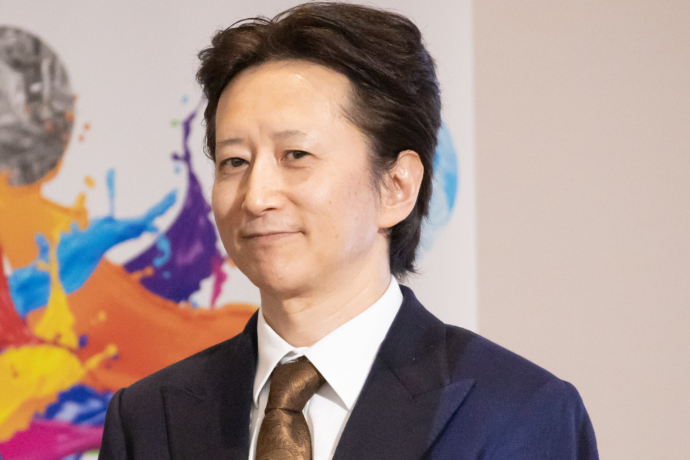

XML Projekt
Manga je naziv za japanske stripove. MyAnimeList je web stranica na kojoj možete voditi računa o tome koje ste mange pročitali. U ovome projektu ću pokazati mange koje sam pročitao pomoću stranice MyAnimeList preko koje sam exportao svoje informacije u XML formatu.
Poznati autori i njihova djela:


Masashi Kishimoto
Hirohiko Araki rođen je 7.7.1960. u mjestu zvanom Sendai te je autor serijala "JoJo's Bizarre Adventure"